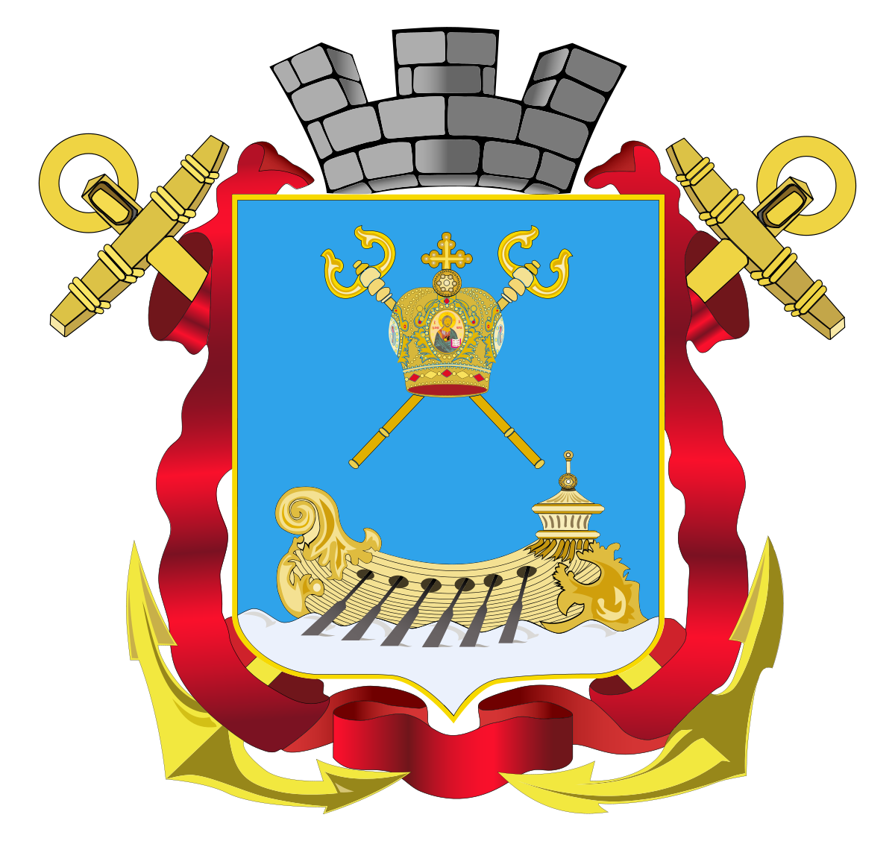
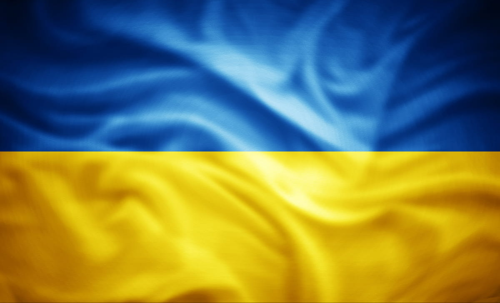

|  |
Миколаїв - це Україна |
 |
Миколаїв — місто в південній частині України, адміністративний центр Миколаївської області та Миколаївського району. Один із найбільших економічних центрів півдня України. Поява міста пов'язані з будівництвом кораблебудівної верфі. У ХІХ столітті став центром кораблебудування на Чорному морі, а також центром управління Чорноморським флотом. У другій половині ХХ століття був одним із найважливіших регіонів радянського суднобудування.
У 2022 році під час вторгнення Росії в Україну нагороджений званням Місто-герой.
На території сучасного Миколаєва близько 1250—925 років до н. е. існувало так зване місто людей кімерійських — стародавнє місто-порт кімерійців (білозерської культури)[7]. Це найстаріше місто на території України, що згадується в писемних джерелах[8]. Вид на місто з висоти 10 км У Середньовіччя, 1399 року, у південній місцині сучасного міста — Вітовці Великий литовський князь Вітовт звів тут Вітовтівський замок (фортецю) і митницю для контролю торгівлі з татарами. Сучасний Миколаїв розвинувся завдяки кораблебудуванню. Спочатку він будувався як кораблебудівна верф. Протягом XIX століття Миколаїв був центром кораблебудування на Чорному морі, а також центром управління Чорноморським флотом Російської імперії. Назву місто отримало на честь покровителя мореплавців, святого Миколая Мирлікійського. Також існує версія, що місто найменовано на честь перемоги російських військ 1788 року під час взяття османської фортеці Очаків, що збіглася з Днем святого Миколая.
| Показник | січ | лют | бер | кві | тра | чер | лип | сер | вер | жов | лис | гру | рік |
| Середній максимум, °C | -1 | 0 | 5 | 14 | 21 | 25 | 27 | 26 | 20 | 14 | 8 | 2 | 14 |
| Середня температура, °C | -3,1 | -1,8 | 2,6 | 10,2 | 16,5 | 20,4 | 22,3 | 21,8 | 16,9 | 10,3 | 4,4 | -0,1 | 10,0 |
| Середній мінімум, °C | -6 | 5 | 0 | 6 | 11 | 15 | 17 | 16 | 11 | 6 | 0 | -2 | 6 |
| Норма опадів, мм | 35.7 | 35.4 | 29.0 | 32.3 | 43.5 | 54.2 | 56.2 | 41.0 | 39.5 | 21.5 | 36.4 | 42.6 | |
| Кількість сонячних годин | 68,2 | 73,5 | 120,9 | 180,0 | 263,5 | 288,0 | 306,9 | 294,5 | 231,0 | 167,4 | 52,7 | 2116 | |
| Кількість днів з опадами | 6,4 | 6,1 | 5,5 | 5,5 | 6,5 | 6,5 | 5,1 | 4,1 | 4,3 | 3,3 | 5,9 | 7,4 |
Джерело: Meteoprog.ua Джерело: Meteoprog.ua та Hong Kong Observatory
Згідно дослідження, проведеного кандидатом біологічних наук Русланою Мельник 2001 року, у складі урбанофлори Миколаєва нараховувалося 909 видів судинних рослин, які належать до 441 роду, 100 родин, 57 порядків та 4 відділів. Вперше описано 224 види з цього регіону. Наведено результати систематичного, географічного, біоморфологічного та екологічного аналізів території міста. Адвентивна фракція урбанофлори налічувала 235 видів. Урбанофлора Миколаєва нараховувала 18 рідкісних видів судинних рослин, з яких 4 види включено до Європейського Червоного списку, 11 — до Червоної книги України, 3 види визначено рідкісними для Миколаївщини та угруповання 2-х формацій занесено до Зеленої книги України. Флоросозологічні дослідження показали, що 6 рідкісних видів ймовірно зникли з території міста, тому розпочато реінтродукцію 3-х видів зниклих рослин, 12 видів перебувало на межі зникнення. Поблизу селища Матвіївка розташований Матвіївський ліс, перші насадження якого було закладено 1952 року, а до того на його місці були сади з криницями. Основними представниками дерев є сосна та робінія (звана «акацією»). У лісі водиться багато видів тварин і птахів.
Лісовий заказник: Балабанівка. Гідрологічний заказник: Вітовське водосховище. Ботанічні пам'ятки природи: Волошка білоперлинна, Горизонтальний дуб (дендропарк «Дружба»), Дуб (вул. Адмірала Макарова), Дуб (вул. Велика Морська), Дуб черешчатий, Дуб черешчатий по вул. Адміральська, 22, Сквер «Пам'ять». Гідрологічна пам'ятка природи: Турецький фонтан. Парки-пам'ятки садово-паркового мистецтва: Аркасівський сквер, Ліски, Народний сад, Парк ім. 68 моряків-десантників, Перемоги, Сквер Юних героїв, Сквер суднобудівників, Флотський бульвар, Юність. Заповідне урочище: Дубки. Зоологічний парк: Миколаївський (загальнодержавного значення).
Станом на 1 січня 2022 чисельність населення Миколаєва становила 470 011 осіб (42,5 % населення Миколаївської області). На початку 2022 р. за чисельністю населення серед міст України Миколаїв посідає 9 місце.[14]. Динаміка зміни чисельності населення
Освітня мережа міста Миколаїв налічує 74 діючих дошкільних і 75 загальноосвітніх навчальних закладів різних типів. Керівним органом в галузі дошкільної, загально середньої та позашкільної освіти в місті є Управління освіти виконкому Миколаївської міської ради. У Миколаєві працюють декілька вищих навчальних закладів (як державні, так і приватної форми власності):
У Миколаєві діє розгалужена мережа як державних і комунальних, так і приватних медичних закладів, загальний контроль за діяльністю яких і якістю надаваних послуг здійснює Управління охорони здоров'я міста Миколаєва. Державні і комунальні медичні заклади (офіційні дані на кінець 2000-х рр.): міські лікарні № 1,3,4; лікарня, станція і 3 підстанції швидкої медичної допомоги; 2 дитячих лікарні і 3 пологових будинки[19]; У 2020 році міська лікарня № 1 здобула[20] нагороду «Краще підприємство України» у галузі медицина. Миколаївська обласна психіатрична лікарня № 2; міські поліклініки № 1—4 і дитячі поліклініки № 1—3[21]; стоматологічні поліклініки № 1—3 і дитяча стоматологічна поліклініка[22]; низка санаторіїв і профілакторіїв («Знання», «Дубки», «Інгул», «Південний»)[23]; міський протитуберкульозний диспансер, міська дезінфекційна станція, міська і районні санітарно-епідемічні станції[24]. Медико-санітарні частини діють на великих міських підприємствах. У місті розвивається сфера приватної медицини, як загального терапевтичного, так і спеціального — діагностичного, стоматологічного, наркологічно-неврологічного, дитячого спрямування, діє перша міська приватна швидка медична допомога «077 Швидка допомога»[25].
У Миколаєві народився та жив найвідоміший єврейський діяч XX століття Менахем Мендл Шнеєрсон[26]. У 2015 році на балансі комунального підприємства «Миколаївська ритуальна служба» знаходяться 15 кладовищ, з них закритих 9.[27] Найбільшими з них є Мішковський цвинтар (122 га) і Некрополь Миколаєва (32,9 га)[28].
Миколаїв — значний культурно-просвітницький осередок Південної України. У Миколаєві діють 58 закладів культури, що перебувають на обліку комунального міського господарства. З-поміж них три театри, музеї, міський культурний центр і 4 будинки культури, 10 шкіл естетичного виховання, клубні установи, міські парки культури і відпочинку та Миколаївський зоопарк, культурно-ігровий комплекс Дитяче містечко «Казка», розгалужена мережа з 35 бібліотек тощо.
У місті працює обласна філармонія, також на комунальному балансі перебувають муніципальний театр-студія естрадної пісні, Муніципальний камерний оркестр тощо. Головні кінотеатри — «Піонер», «Батьківщина», «Мультиплекс» та «Юність».
Миколаївські музеї:
Найбільші бібліотеки міста:
У місті, одному з перших у державі, діє зведений електронний каталог миколаївських бібліотек-учасників проєкту «Ресурси бібліотек міста Миколаєва»[29] (проєкт Миколаївської обласної бібліотечної асоціації, МОБА).
Найбільші міські парки Миколаєва:
Також у місті розташований один із найкращих в Україні і найвідоміших у Європі зоопарків — «Миколаївський зоопарк».
Місто складається з 4 районів:
| 13 лінія | Абісинія | Аляуди | Балабанівка | острів Батарея | Велика Корениха | Варварівка | Воєнна Слобідка | Дикий Сад | Інвалідний Хутір | Історичний центр | Богоявленський | Кульбакине | Ліски | Ліски-2 |
| Мала Корениха | Матвіївка | Морпорт | Намив | Новий Водопій | Причепівка | ПТЗ | П'ять кутів | Робоча Слобідка | Ракетне Урочище | Північний | Сади | Селище Горького | ||
| Сонячний | Соляні | Сортировка | Старий Водопій | Вантажний вокзал | Сухий Фонтан | Темвод | Тернівка | Царське село | Центральний Ринок | Широка Балка | Ялти | Яхт-клуб |
На 2014 р. суб'єктами переробної промисловості реалізовано продукції у відпускних цінах підприємств (без ПДВ і акцизу) на суму 9,44,0[прояснити] млрд грн, у тому числі:
Промислові підприємства міста забезпечують до 50 % обсягів продукції суднобудування України, понад 90 % державного виробництва газових турбін, 80 % глинозему.
Крім важкої промисловості в місті розвинута харчова промисловість (особливе піднесення відбулося після 1991 року завдяки іноземним інвестиціям) — так, в Україні та за її межами користується незмінною популярністю продукція ТОВ «Сандора», ЗАТ «Лакталіс-Україна», пивзаводу «Янтар» тощо.
Найбільші миколаївські підприємства:
Заплановане будівництво нового мосту.
Місто є транспортним вузлом, через який проходить низка автошляхів:
Місто є вузлом залізничних ліній на Одесу, Херсон, Снігурівку, Долинську. Відстань від Миколаєва до Києва — 494 км.
Громадський транспорт міста Миколаїв:
Невіддільною частиною історії міста є його символіка. До неї відносяться герб, прапор, гімн і логотип Миколаєва.
7 жовтня 1803 року імператором Олександром I затверджено перший герб Миколаєва, котрий було змінено 16 березня 1883. 26 вересня 1997 року на засіданні міської Ради було затверджено сучасний герб Миколаєва.
У 1883 році, до 100-річчя міста, Миколаївська міська Дума затвердила прапор міста. 10 вересня 1999 року у день 210-річчя Миколаєва прапор було освячено і піднято над будівлею міськвиконкому.
11 вересня 2004 року Миколаївська міська Рада своїм рішенням затвердила гімн Миколаєва, створений авторським колективом під керівництвом Анатолія Сироти.
У вересні 1996 року Миколаївська міська Рада затвердила почесний знак «Городянин року». Ним відзначають заслуги будь-якого громадянина в будівництві демократичного правового суспільства, в економічній, науково-технічній, гуманітарній, соціально-культурній сферах, у вихованні дітей, у спорті, у захисті інтересів міста Миколаєва та нарощуванні його авторитету як в Україні, так і на міжнародному рівні.
З 1998 року присвоєння звань «Городянин року» і «Людина року» здійснюється в рамках загальноміської програми «Людина року». Міський оргкомітет, який з 1998 по 2013 незмінно очолював Валерій Карнаух, присвоює звання за результатами експертного й газетного опитувань.
У вересні 2019 року, на честь 230-річчя міста, було презентовано туристичний та громадський логотип Миколаєва. Логотип являє собою літеру «М» стилізовану під повні вітрила над хвилями, зверху за вітром майорить прапор, що символізує рух вперед та розвиток міста. 24 грудня 2020 року, міська рада Миколаєва, прийняла рішення затвердити цей логотип як офіційний туристичний логотип Миколаєва[36].
Ще одним неформальним символом міста став арт-об'єкт «МИ», концепція якого стала переможцем у відкритому конкурсі серед дизайнерів міста[37]. Автор ідеї, дизайнер Роман Дорошенко, спробував передати дух Миколаєва, як мультикультурного і багатонаціонального міста:
«МИ різні, але живемо разом, розуміємо один одного і створюємо місто, у якому хочеться жити. МИ здатні змінити Миколаїв на краще. МИ відповідальні за свою територію».
Первістком незалежної преси в місті була газета «Чорноморія» — орган ради осередків регіональної організації НРУ, видавалась від грудня 1989 по січень 1991 рр. (загалом 11 чисел). Головні сучасні друковані інформаційні суспільно-політичні періодичні видання Миколаєва (разові наклади, тис. прим.): «Рідне Прибужжя» (30) — офіційне передплатне видання Миколаївської області українською мовою; «Южная правда» (25) — найстарша за часом видання суспільно-політична обласна газета[39]; «Вечерний Николаев» (10) — міська суспільно-політична газета[40]; «Николаевские новости» — суспільно-політичний тижневик з популярним вебресурсом[41]; журнал «NL» — друкована версія онлайн видання NikLife. Також у місті бурхливо розвивається спектр комерційних інформаційних, бізнесових видань.
Маяк.media Архівовано 25 січня 2020 у Wayback Machine. — міське інтернет-видання, запущене 2018 року колективом газети «Маяк» та Агенцією розвитку локальних медіа «Або».[42]
«Південна правда» — одне з найстаріших і тиражних видань Миколаївські телекомпанії:
У Миколаєві діє незалежне інформаційно-аналітичне агентство «Контекст-Причорномор'я» (крім Миколаївської, працює також у Одеській та Херсонській областях)[44].
Місцевий інтернет представлений переважно інформаційно-популярними порталами: інформаційно-аналітичне видання «Преступности. НЕТ»[45], інтернет-журнал NikLife, перша інтернет-газета «Микола»[46], онлайн-видання «Губернський Тиждень»[47], обласна інтернет-газета «Новини — N»[48], суспільно-політичне видання «НикВести»[49], Миколаївський молодіжний портал[50], та деякі інші.
На території міста в межах радіочастот FM-діапазону своє мовлення проводять 19 всеукраїнських та регіональних радіостанцій:
Цей розділ потребує
У Миколаєві працюють 25 дитячих і юнацьких спортивних шкіл з 36 видів спорту, у яких займаються близько 9,2 тис. осіб (середина 2000-х рр.).
Підготовку професіональних спортсменів здійснюють міське вище училище фізичної культури і спорту, школа вищої спортивної майстерності.
У місті розташовані 5 стадіонів, зокрема, Центральний міський стадіон, також 118 спортивних залів, 4 плавальних басейни, 21 тенісний корт.
Честь міста у першостях України захищають баскетбольний клуб МБК «Миколаїв» і футбольна команда МФК «Миколаїв» (у сезоні 2015/2016 виступає в 1-й лізі українського Чемпіонату з футболу). В американському футболі місто представляє команда «Миколаївські Вікінги».
В Богоявленському житловому масиві, розташований спортивний комплекс плавальних басейнів «Водолій»[51]. Комплекс має два блоки. В першому блоці розташований 50-ти метровий олімпійський басейн, басейн гідромасажу з гіркою та окремий дитячий басейн для дітлахів до 8-ти років. Влітку відкривається територія пляжу на якій розташовані дитячий та дорослий басейни без підігріву. В другому блоці розташований басейн для спортсменів зі стрибків у воду та синхронного плавання. На базі спортивного комплексу працюють дві дитячі спортивні школи комерційна «ВОДОЛІЙ» та міська КДЮСШ «Україна» .
З огляду на географічне розташування міста розвиток у Миколаєві набули вітрильний спорт (міський яхт-клуб) та пірнання з аквалангом (клуб «Садко»).
У 1790 році було складено регулярний план міста (архітектори Іван Старов, Іван Князєв та Франц де Воллан) з прямокутною сіткою вулиць та центральною площею на перехресті двох головних магістралей[52].
До прикметних архітектурно-історичних пам'яток міста належать:
Серед споруд у Миколаєві доби СРСР:
У 2015 році на балансі комунального підприємства «Миколаївська ритуальна служба» знаходяться 15 кладовищ, з них закритих 9.[27] Найбільшими з них є Мішковський цвинтар (122 га) і Некрополь Миколаєва (32,9 га).[28]
Починаючи з 2000-х років в місті було зведено значну кількість малих архітектурних форм (МАФ) та встановлено велику кількість білбордів, значна частина яких є протизаконною, що, загалом, призвело до захаращення міста. Новий архітектурний стиль міста отримав неофіційну назву «будкоград»[53][54]. Частково цю проблему почав вирішувати новообраний мер міста Олександр Сенкевич[55] — з 2016 до 2017 року було ліквідовано 160 МАФів і 360 білбордів[56].
Місто Миколаїв є членом Міжнародного чорноморського клубу, бере участь у роботі Всесвітньої ради екологічних ініціатив (ICLEI) та є учасником міжнародної ініціативи CIVITAS від Європейської Комісії[59].